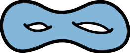

Spring 2024
Topology is the study of continuity, broadly generalizing concepts first encountered in calculus. This course progresses from point-set topology, with an emphasis on topological manifolds, to the beginnings of algebraic topology — a fascinating field that bridges algebraic structures and topological objects.
Text
- Primary: Lee, Introduction to Topological Manifolds
- Supplemental: Crossley, Essential Topology
Office Hours
- Office hours will appear here once settled.